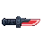
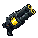
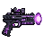
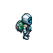
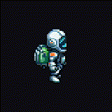

무기 손 부착 검증 — M2 진입 전
주인공(우주항해자)이 카테고리 4종 무기를 손에 들고, 자동사격 각도에 맞춰 손 앵커에서 회전한다. 캐릭터 애니 6종은 그대로 재사용 — 무기별 재애니 없음. 이 보드는 부착 메커니즘 · 발사 회전 · 카테고리색 가독성을 실제 생성 에셋으로 검증한다.
카테고리 카탈로그
색 + 실루엣이 함께 카테고리를 텔레그래프 (정답 키). 무기 본체·머즐·투사체·손 아우라가 카테고리색을 운반 — 본체(우주항해자)·몬스터 몸체는 4색 회피로 색=정보 가독 유지. 해금 순서 = §2.11 커리큘럼 (P1→P4).




각 카테고리 = 3 후보 중 추천 1종 (대안 = 매니페스트 object_id). 후보 비교 = wpn-compare 렌더.
손 부착 — east 사이클 + 미러
무기 = 손 앵커에 parent 되는 별도 스프라이트. 단일 east 사이클 + 미러 모델 (8방향 스냅 폐기) — east 손 앵커 1점이면 west는 scaleX(-1) 미러로 자동. 손 앵커 = east 88px 프레임 native (47, 51).


발사 회전 데모
자동사격은 조준 입력 없이 유효 타깃으로 발사 — 무기가 grip pivot을 중심으로 회전해 각도를 표현. 캐릭터 애니는 그대로. 벽 주행(§2.4) 시 = 캐릭터 전체가 트랙 접선으로 회전, 무기는 손에 붙은 채 함께 돈다.
인게임 스케일 가독성 — 다크 트랙
실제 인게임 상대 크기로 다크 트랙 위에 배치. 색 + 실루엣만으로 카테고리를 즉시 구분할 수 있는가? (paranoia #5 인게임 가독성 1순위) — 발사 순간의 머즐 플래시·투사체·손 아우라는 Unity 런타임 VFX가 토큰색을 정확히 운반(스프라이트 글로우는 근사).
결정 항목 & 핸드오프
사용자(디렉터) 확정 대상. 확정 시 → 스테이징 assets/weaver/weapons/ + 매니페스트 에셋 2 기록 → plat(unity M2) 임포트·VFX.
① 형태↔카테고리 매핑 — blaster / blade / flak / orb
4종이 색 + 실루엣 양쪽으로 구분되는가? (정답 형태 텔레그래프) — §4 가독성 트랙 기준.
② 카테고리별 hero 후보
현재 추천 = 🔵 c12(시안 코어) · 🔴 c2(클린 날) · 🟡 c4(더블배럴) · 🟣 c5(오브 글로우). 대안 후보 각 2종 보유 — 교체 원하면 지정.
③ 손 부착 스탠스 + 스케일
현재 = hip-mount (손이 허리 높이 → 무기 전방). 무기:캐릭터 ≈ 0.37× 높이. 자동슈터 표준 (Soul Knight·Archero 류). OK / 조정?
④ 🔵 글로우 = 시안 vs 토큰 #4DABF7
생성 글로우가 토큰보다 더 시안(밝음). 인게임 머즐·투사체 VFX가 정확한 #4DABF7 운반 예정 — 스프라이트 글로우는 그대로 둘지(에너지 무기 톤) / 더 블루로 재생성할지.
⑤ 다음 (M2 본 에셋 트랜치)
무기 확정 후 → 몬스터 void fauna 3~4종 (일반🔵·장갑🔴·요격낙하물🟡·특수🟣) + 장애물(가시·바·낙하물·잔해). 동일 PixelLab 파이프라인.